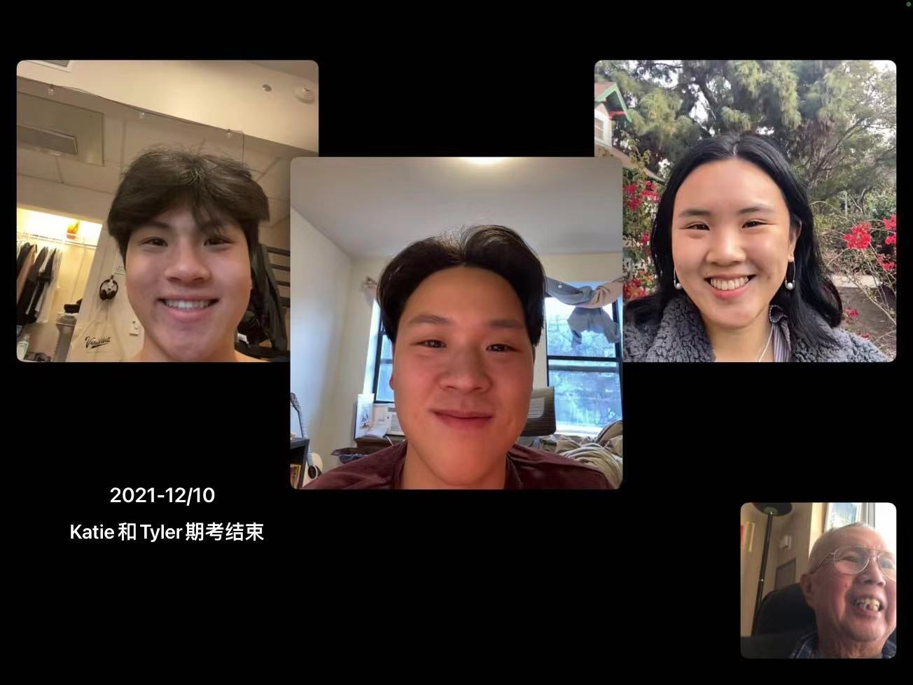

"Please Give a Call to Yeye" is a phrase that my father texts me from time to time as a reminder to check in on my grandfather. My paternal grandparents, or Yeye and Nainai in Mandarin, were incredibly involved in my brothers and I's life growing up, making us our school lunches, driving us to school, helping with the carpooling schedule for swim practices, etc. As the three of us have grown up and left for college, our relationship has been defined by distance and many Facetime or WeChat calls to each other.
The idea to explore my grandfather's relationship with China started from an inside joke in our family about how our two grandfathers (maternal and paternal) cannot sit in the same room together without bringing up politics regarding China. It made me curious as to what happened to my paternal grandfather during that tumultuous time, trying to understand who is was, and is, beyond his role as my warm and caring grandfather. And then I thought who better to take along this journey than my brothers.
From what started as a curiosity to learn more about his life and understanding his point of view on politics, turned into an ode to how that relationship has changed as the three of us are spread across three different time zones, in another country -- a portrait of how intergenerational relationships persist.

First and foremost, I would like to thank my family: Baba, Mum, Mark, Tyler, and, of course, Yeye. They are the inspiration behind it all and have shown unwavering support for everything I do. Thank you DJ and Elizabeth for bearing with me over this past year and giving me nothing but kindness, patience and the space to grow personally and creatively. To my mentors and teachers throughout my time at USC, Viola Lasmana, Q, Ashley Kang, thank you for always believing in me. And finally, to the 2022 MA+P cohort, congratulations we did it!
Thank you KY for making this site responsive 🤍